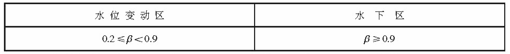
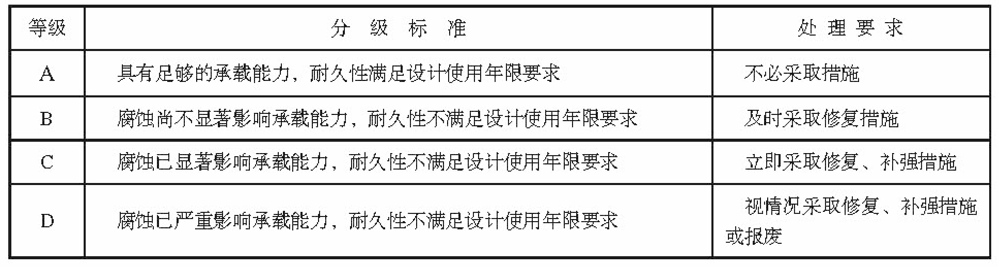

5. 钢结构耐久性检测与评估
5. 钢结构耐久性检测与评估#
5.1 腐蚀介质及工程情况的调查
5.1.1 腐蚀介质调查内容宜包括潮汐、 温度、湿度、含盐量、pH值、电细率、水污染情况和其他侵蚀介质等,海水环境钢结构腐蚀介质调查内容还应包括海水中氯离子含量。
5.1.2 工程情况的调查内容除应包括第3.0.2条规定的内容外，还应包括腐蚀情况的检查检测记录。
5.2 检测
5.2.1 淡水环境钢结构外观检测应针对水上区和水下区等不同部位分别检测，海水环境钢结构外观检测应针对大气区、浪溅区、水位变动区和水下区等不同部位分别检测，检测应包括下列内容:
锈蚀发生的位置 \(、\) 面积和分布情况;
钢结构表面集中锈蚀、点蚀或穿孔情况;
外力作用引起的提伤情况等。
5.2.2 钢结构构件厚度检测应根据外观检测结果选择腐蚀严重和应力大的部位。
5.2.3 钢结构的锈蚀检测方法应符合附录E的规定。
5.3 评估
5.3.1 钢结构耐久性评估验算应符合下列规定。
5.3.1.1 验算断面的选取应综合考虑钢材腐蚀状况和结构应力分布状况等不利因素。
5.3.1.2 验算断面尺寸宜采用调查结果的平均值，并应考虑坑蚀程度的影响。
5.3.1.3 腐蚀速度的计算应按下列情况分别进行:
- 无防腐蚀措施的钢结构腐蚀速度按式(5.3.1-1) 计算:
$$V_{0}=\dfrac{D_{i}-D_{f}}{t_{s}}\tag{5.3.1-1}$$
- 有防腐蚀措施的钢结构，腐蚀速度按式(5.3.1-2) 计算:
$$V_{1}=\dfrac{D_{i}-D_{f}}{(1-\beta)t_{s1}+t_{s2}}\tag{5.3.1-2}$$
| 式中 | V1 | —— | 钢结构腐蚀速度(mm/a); |
| Di | —— | 钢结构原始厚度(mm); | |
| Df | —— | 检测时钢结构的平均厚度(mm); | |
| β | —— | 防腐蚀措施防腐效率，对涂层防腐或涂层与阴极保护联合防腐取0.5~0.95,对阴极保护防腐按表5.3.1选取; | |
| ts1 | —— | 防腐蚀措施有效工作时间(a); | |
| ts2 | —— | 防腐蚀措施失效后至调查时的时间(a)。 |
表5.3.1 阴极保护防腐蚀措施防腐效率

5.3.2 钢结构使用年限应根据腐蚀情况检测结果按式(5.3.2) 计算：
$$t_{e}=t_{s}+\dfrac{D_{f}-D_{i}}{V}\tag{5.3.2}$$
| 式中 | te | —— | 钢结构使用年限(a); |
| ts | —— | 检测时钢结构已使用的时间(a); | |
| Df | —— | 检测时钢结构的平均厚度(mm); | |
| Dt | —— | 按承载能力极限状态计算出的钢结构厚度(mm); | |
| V | —— | 钢结构腐蚀速度(mm/a) |
5.3.3 钢结构耐久性评估分级标准应符合表5.3.3的规定。
表5.3.3 钢结构耐久性评估分级标准及处理要求
